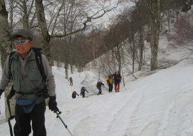

|
|||||||||||||||||||||||||||
|
|||||||||||||||||||||||||||
|
苗場山スキー |
| 開 催 日 | ２００９年４月１１〜１２日 | |||
| リーダー | 川合 | |||
| 報 告 者 | 高井（紀） | |||
| HP制作者 | 高井（紀） | |||
| 参加者数 | １２名 | |||
| 今年は出口屋のご主人、和人さんが昨年5月に急逝された「出口屋のお父さん」（福原直市さん）に代わってルート案内をしてくれた。 沢に沿って登っていくコースで、稜線下の急斜面まではかなり楽にいけた。そのため、 引き返し時間の12時までにほとんどの人が頂上に登った。 雪の量は多かったが、数日前から温度が高かったためか、雪質は「ざらめ」にならず不安定だった。 |
| 4月11日（土） |
| 集合は夕方なので、出口屋さんに到着すると、三々五々、楽養館の湯に入り、ビールを飲み、蕗の薹を摘みながら戻る。 夜は山菜をたっぷり使った美味しい料理、自家製のどぶろくに舌鼓を打ちながら宴会 |
| A |
||
| 楽養館の湯は、もともとは透明だが鉄分を含むため、いったん空気に触れると赤褐色に変色する | 出口屋さん自家製のどぶろくの差入れ 「待ってました！！」 |
| 4月12日（日） |
| 天気：晴。無風 出口屋(780m) 6:05→→三叉路(1230m) 6:30→→駐車場(1300m) 7:30→→急斜面下(1800m) 9:25→→稜線(2050m) 10:35〜11:00→→苗場山山頂(2145m)11:30〜12:05→→急斜面下12:30〜13:00→→駐車場14:00〜14:20→→三叉路15:10→→出口屋15:30 |
| 神楽峰山頂からの苗場山(2145m) 2009/4/10撮影 |
|  | A | |
| 風もなく登るには最適な日となった | 出口屋さんの福原和人さんの案内で |
| A | ||
| 稜線下の急なスロープでは、大半は早くから「つぼ足」に。シールで頑張った人も最後はつぼ足に。 | ||
 |
A | |
| 稜線に出てひと休み | 苗場山頂上ヒュッテ |
| A | ||
| 雪に埋もれた山頂の遊仙閣 | 4月5日の全国集会で見慣れた岩菅山 |
| 山頂での集合写真（12時までの到着者） |
| A | ||
| 稜線下の急斜面。滑ると足元や上から雪ボールが落ちてきて斜面に溝を作っていく。 | 2006年に雪崩にあった斜面を横切る |
| A | A | |||
| 駐車場で全員が到着するのを待つ | リーダー到着 | いろいろお世話になりました！三叉路で |
| 速度による色分け： ——：登り ———：下り |
| 毎年企画される苗場山は、その年の雪の量、雪質によってルートも登り易さも違ってくる。 今年は比較的登り易い雪だった。だが、雪質が不安定だったので、急斜面の下りでは、 スキーを楽しむというより、早く無事に下りてしまいたいとあせった。 福原さんの適切なコース指示によって、予定の時間までに全員無事に戻ることが出来た。 |